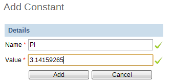

Constants are static values which can be made available to users for use in data elements and indicators. Some indicators, such as "Couple year protection rate" depend on constants which usually do not change over time. Simply press "Add" and provide a name in the "Name" field and define it's value in the "Value" field. Press "Add" . The constant will now be available to users for use in their expressions.
|  |